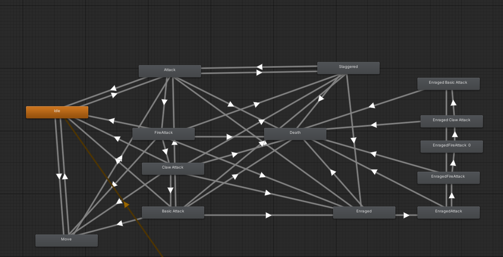
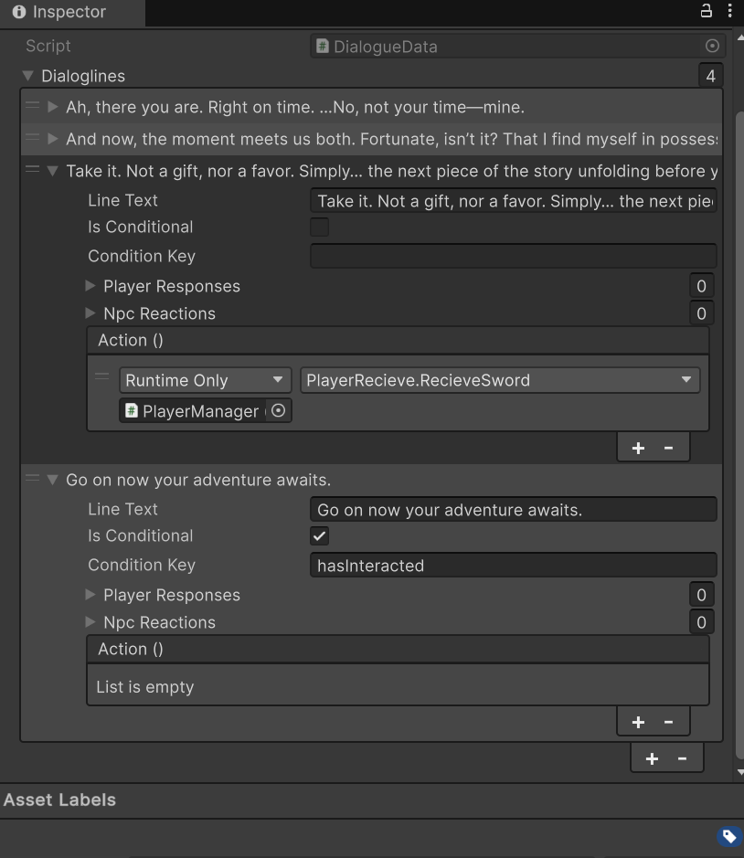
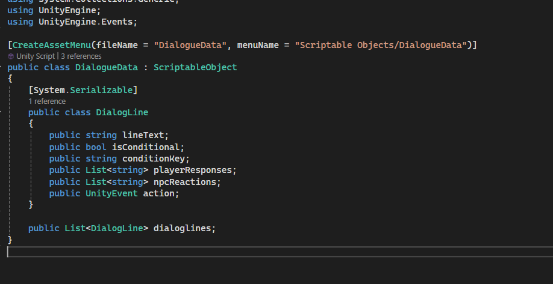
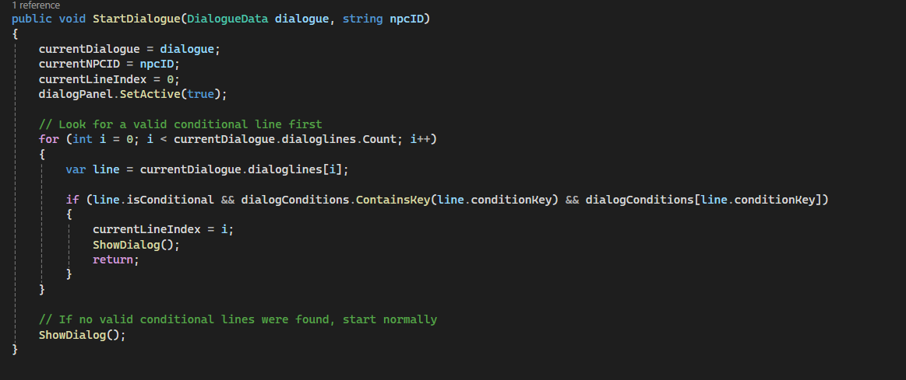

Hi, I’m Sadie, I'm a Unity Developer with 3 years of experience building games and interactive applications across VR, mobile, and PC. I specialize in C# programming,
Unity’s animation and timeline systems, and creating branching logic that makes interactive stories feel seamless and impactful.
I’ve worked on everything from VR training simulations to indie game prototypes, contributing systems for physics-based gameplay,
and smooth scene management. Whether collaborating with designers, artists, or audio teams, I focus on making interactions clear, transitions polished,
and experiences immersive.
Featured Projects
Scare Tactics
Scare Tactics is a lighthearted low-poly ghost game where players pick up and throw objects at NPCs to scare them and earn XP.
I built a progression system where XP unlocks new levels, and designed NPC interactions so characters react when objects are thrown
The AI and progression systems were implemented modularly,
making it easy to expand with new NPC types, reactions, and difficulty scaling.
Car Engine Demo
Car Engine Demo is an interactive training simulation for learning car engine repair.
While the original interactions were built for VR, I developed a flexible system that allows the demo to run in either VR or a traditional PC point-and-click mode.
By creating a toggle between input methods, I enabled the same repair procedures and scene flow to be experienced across platforms without duplicating core logic.
This approach made the project more accessible, easier to test, and adaptable for different hardware setups.
AI Combat Demo

Unity Animator state machine: each state (Idle, Patrol, Fire Breath, Enraged) transitions based on health and player distance, keeping the boss logic modular and extensible.
This demo showcases a boss encounter where a dragon cycles through different combat states using a modular AI state machine.
The dragon transitions between behaviors like patrol, ranged attack, fire breath, and an enraged phase when its health gets low.
Alongside the boss, a support NPC companion dynamically monitors the player’s health. The NPC heals the player when they fall below a threshold and revives
them if they die, ensuring the fight feels dynamic and responsive. By structuring the dragon’s behavior around a state machine, the system is scalable and easy to
extend with new attacks, phases, or additional companions.
Scriptable Dialogue System

DialogueData asset in the Unity Inspector: Designers can easily author dialogue lines, conditions, and player choices without coding.

DialogueData ScriptableObject: Reusable data-driven architecture for branching dialogue.

DialogueManager’s StartDialogue() method: handles conditional branching so NPC conversations adapt to player state.
This tool enables branching NPC conversations in Unity, built using ScriptableObjects for modular data storage and a DialogueManager that processes conditions, player choices, and NPC reactions.
By separating dialogue data from logic, the system is reusable, designer-friendly, and easily extended for larger narrative projects.